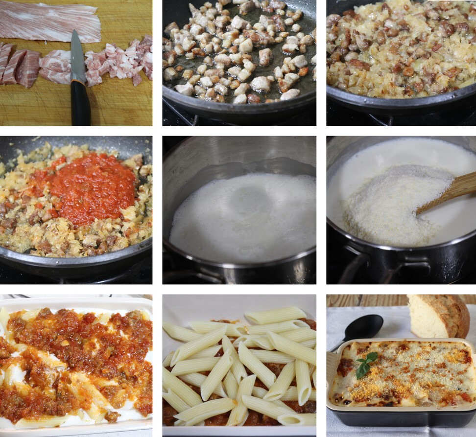

Cortamos el secreto ibérico en tiras y después estas en cuadraditos. En una sartén doramos el secreto y cuando está reservamos. En la misma sartén con la grasa del secreto, confitamos a fuego lento la cebolla hasta que toma color. Entonces, retornamos el secreto ibérico y añadimos la salsa de tomate frito. Mezclamos y reservamos.
Para la segunda salsa, ponemos la nata líquida a reducir teniendo cuidado de que no se nos salga al subir. Con el fuego al mínimo, añadimos el parmesano rallado y mezclamos, haciendo una especie de bechamel clarita que también reservamos.
Cocemos la pasta un poco más de lo que indica el fabricante, para que nos quede ligeramente pasada, como era costumbre en la época de origen de la receta. En una fuente de horno, ponemos una capa de sofrito de carne, otra capa de macarrones y otra de salsa de nata y queso. Repetimos varias veces la operación y terminamos con salsa de nata y queso.
Espolvoreamos los macarrones del cardenal con más parmesano y llevamos al horno, calentando a 180ºC durante siete u ocho minutos y gratinando la superficie a 220ºC durante otro par de minutos y llevamos a la mesa.